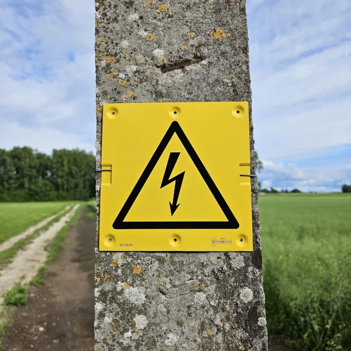

Typology
Sauna House

Project 01
Põhu projekt uurib, kuidas soojad bioloogilised kiud ja kalibreeritud mineraalne mass saavad eksisteerida ühes vastupidavas kestas. Projekt käsitleb jätkusuutlikkust kui täpsusmõõdet, kus iga liides, koormustee ja termiline kiht on muudetud tahtlikult nähtavaks.
Typology
Sauna House
Phase
02 / Foundation
Structure
Timber & Straw
Location
Nordic Region


Phase 00: Design & Architectural Drawings
Before breaking ground, the structure was synthesized in digital and physical line drawings. The design methodology strips away ornament, focusing purely on spatial volumes and orientation. Every wall axis is bound to the exact dimensions of the straw bales to eliminate cutting waste, optimizing structural integrity while framing the expansive Nordic scenery through large, calculated openings.
Phase 01: Connection to power grid and utilities
Before the foundation is laid, connections to the power grid and other utilities are established to ensure seamless integration with the building's infrastructure.



Phase 02: Foundation / Current Status
Foundation works focus on exact concrete alignment, controlled reinforcement spacing, and moisture management at every interface. The slab and perimeter walls are designed as a calibrated thermal battery, storing heat during operating cycles while protecting the upcoming straw bale envelope from capillary and structural stress.


Phase 03: Straw Bale Walls & Protective Roof
With the mineral base complete, the timber frame is erected, and straw is meticulously packed to form the main thermal envelope. Crucially, a permanent roof structure is installed first to shield the moisture-sensitive straw from weathering during construction.

Project Economics
The budget is structured around measurable construction milestones. Click on individual phases to expand and view the detailed line-item cost breakdowns.
| Etapp | Etapi nimetus | Maksumus |
|---|---|---|
Etapp 00 Projekteerimine ja joonised 0 €
Arhitektuurne kontseptsioon ja joonestamine
0 €
|
||
Etapp 01 Trassid ja liitumised 18,955.84 €
Tee-ehitus
3,600.00 €
Elektrivõrguga liitumine
10,367.64 €
Veetaristu
4,988.20 €
|
||
Etapp 02 Vundament 4,828.56 €
Soojustus ja armatuur
2,568.95 €
Vesi, kanalisatsioon ja küte
663.16 €
Betooni valu
1,596.45 €
|
||
Etapp 03 Põhust seinad 1,779.39 €
Puitkarkass
1,779.39 €
|
||
| Kokku | 25,563.79 € | |